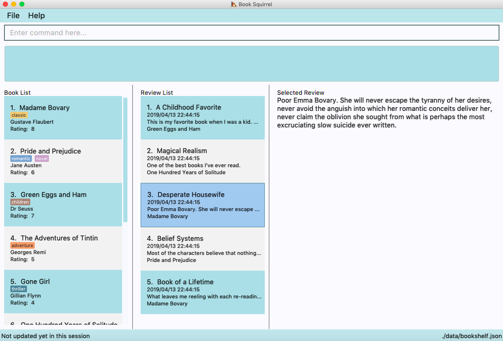

By: Team W11-04 Since: Feb 2019 Licence: MIT
- 1. Introduction
- 2. Quick Start
- 3. Features
- 3.1. Viewing help :
help - 3.2. Adding a book:
addBook - 3.3. Adding a book review:
addReview - 3.4. Listing book entries :
listBook - 3.5. Listing book reviews of a certain book :
listReview - 3.6. Editing book entry :
editBook - 3.7. Deleting a book :
deleteBook - 3.8. Deleting a book review:
deleteReview - 3.9. Sort books commands :
sortBook - 3.10. Listing entered commands :
history - 3.11. Undoing previous command :
undo - 3.12. Redoing the previously undone command :
redo - 3.13. Give a summary of all the books read :
summary - 3.14. Clearing all entries :
clear - 3.15. Exiting the program :
exit - 3.16. Saving the data
- 3.17. Encrypting data files
[coming in v2.0]
- 3.1. Viewing help :
- 4. FAQ
- 5. Command Summary
1. Introduction
BookSquirrel is for those who want to keep record of books they’ve read. More importantly, BookSquirrel is optimized for those who prefer to work with a Command Line Interface (CLI) while still having the benefits of a Graphical User Interface (GUI). If you can type fast, BookSquirrel can get your contact management tasks done faster than traditional GUI apps. Interested? Jump to the Section 2, “Quick Start” to get started. Enjoy!
2. Quick Start
-
Ensure you have Java version
9or later installed in your Computer. -
Download the latest
bookSquirrel.jarhere. -
Copy the file to the folder you want to use as the home folder for your Book Shelf.
-
Double-click the file to start the app. The GUI should appear in a few seconds.
 -
Type the command in the command box and press Enter to execute it.
e.g. typinghelpand pressing Enter will open the help window. -
Some example commands you can try:
-
addBookn/Alice in Wonderland a/Lewis Carroll m/5 t/fantasy t/fairy tale: adds a book namedAlice in Wonderlandto the record. -
exit: exits the app
-
-
Refer to Section 3, “Features” for details of each command.
3. Features
Command Format
-
Words in
UPPER_CASEare the parameters to be supplied by the user e.g. inadd n/NAME,NAMEis a parameter which can be used asadd n/John Doe. -
Items in square brackets are optional e.g
n/NAME [t/TAG]can be used asn/Alice in Wonderland t/fantasyor asn/Alice in Wonderland. -
Items with
… after them can be used multiple times including zero times e.g.[t/TAG]…can be used ast/fantasy,t/fantasy t/textbooketc. -
Parameters can be in any order e.g. if the command specifies
n/NAME a/AUTHOR,a/AUTHOR n/NAMEis also acceptable.
3.1. Viewing help : help
Format: help
3.2. Adding a book: addBook
Adds a book to the book list
Format: addBook n/BOOKNAME a/author m/RATING(0-10) [t/TAG]…
Examples:
-
addBook n/Alice in Wonderland a/Lewis Carroll m/5 t/fantasy t/fairy tale -
addBook n/Structure and Interpretation of Computer Programs a/Hal Abelson Jerry Sussman m/4 t/textbook
3.3. Adding a book review: addReview
Adds a book review to a certain book in the book list
Format: `addReview n/BOOKNAME rt/REVIEW TITLE r/REVIEW MESSAGE
Examples:
-
addReview n/Alice in Wonderland rt/An interesting child book r/While Lewis Carroll purists will scoff at the aging of his curious young protagonist, most movie audiences will enjoy this colorful world. -
addReview n/Structure and Interpretation of Computer Programs rt/Computing Bible r/A very difficult book:(
3.4. Listing book entries : listBook
Shows a list of all book entries, with the specified TAG and RATING.
Format: listBook [n/BOOKNAME] [a/AUTHOR] [t/TAG] [m/RATING]
Examples:
-
listBook t/textbook m/5 -
listBook n/CS2104T t/textbook -
listBook m/5
3.5. Listing book reviews of a certain book : listReview
Shows a list of all review entries of a book.
Format: listReview n/BOOKNAME
Examples:
-
listReview n/Alice in Wonderland
3.6. Editing book entry : editBook
Edits an existing book entry (eg. edit the mark, author or tag).
Format: editBook INDEX [n/BOOKNAME] [a/AUTHOR] [m/RATING] [t/TAG]…
Examples:
-
edit 1 n/Alice in Wonderland a/some author t/some tag
Change the name, author, tag of the first book to Alice in Wonderland, some author, some tag. -
edit 2 t/
Clear all the existing tags of the second book in the result list.
3.7. Deleting a book : deleteBook
Deletes the specified book from the book list.
Format: deleteBook INDEX
Examples:
-
listBook n/Computer Security
deleteBook 1
Deletes the 1st person in the results of the listBook command.
3.8. Deleting a book review: deleteReview
Deletes the review of the specified book from the review list.
Format: deleteReview rt/REVIEW TITLE
Examples:
-
listBook
deleteBook 2
Deletes the 2nd person in the book shelf. -
listReview n/Alice in Wonderland
deleteReview rt/An interesting children’s book
Deletes the review with the title "An interesting children’s book"
3.9. Sort books commands : sortBook
sort bookList in specify order.
Format: sortBook st/TYPE o/ORDER
Examples:
-
sortBook st/name o/ascsort bookList by book name in ascending order. -
sortBook st/RATING o/dessort bookList by rating of the book in descending order.
3.10. Listing entered commands : history
Lists all the commands that you have entered in reverse chronological order.
Format: history
|
Pressing the ↑ and ↓ arrows will display the previous and next input respectively in the command box. |
3.11. Undoing previous command : undo
Restores the records to the state before the previous undoable command was executed.
Format: undo
|
Undoable commands: those commands that modify the records content ( |
Examples:
-
listBook n/Alice
deleteBook 1
undo(reverses thedeleteBook 1command) -
listBook a/James
undo
Theundocommand fails as there are no undoable commands executed previously. -
deleteBook 1
clear
undo(reverses theclearcommand)
undo(reverses thedeleteBook 1command)
3.12. Redoing the previously undone command : redo
Reverses the most recent undo command.
Format: redo
Examples:
-
deleteBook 1
undo(reverses thedeleteBook 1command)
redo(reapplies thedeleteBook 1command) -
deleteBook 1
redo
Theredocommand fails as there are noundocommands executed previously.
3.13. Give a summary of all the books read : summary
Generate a summary of all the books read so far.
Format: summary
Examples:
-
summaryAn example of a summaryYou have read 100 books so far. Your favourite book is Alice in Wonderland. You wrote 13 reviews for it. The tag you use most commonly is “textbook.” Your favourite author is “John Doe”, you read 11 books written by him. The book that you gave the lowest rating is “Algorithms”
3.14. Clearing all entries : clear
Clears all entries from the book shelf.
Format: clear
3.15. Exiting the program : exit
Exits the program.
Format: exit
3.16. Saving the data
Book review data are saved in the hard disk automatically after any command that changes the data.
There is no need to save manually.
3.17. Encrypting data files [coming in v2.0]
{explain how the user can enable/disable data encryption}
4. FAQ
Q: How do I transfer my data to another Computer?
A: Install the app in the other computer and overwrite the empty data file it creates with the file that contains the data of your previous Book Squirrel folder.
5. Command Summary
-
AddBook
addBook n/BOOKNAME a/author m/RATING(0-10) [t/TAG]…
e.g.addBook n/Alice in Wonderland a/Lewis Carroll m/5 t/fantasy t/textbook -
AddReview
addReview n/BOOKNAME r/review
e.g.addReview n/Alice in Wonderland r/While Lewis Carroll purists will scoff at the aging of his curious young protagonist, most movie audiences will enjoy this colorful world. -
Clear :
clear -
DeleteBook :
deleteBook INDEX
e.g.deleteBook 4 -
DeleteReview :
deleteReview rt/REVIEW TITLE -
EditBook :
edit INDEX [n/BOOKNAME] [a/AUTHOR] [m/RATING]…
e.g.edit 1 n/Alice in Wonderland a/some author -
ListBook :
listBook [n/NAME] [t/TAG] [m/RATING] [a/Author]
e.g.listBook t/textbook m/5 -
ListReview :
listReview n/BOOKNAME
e.g.listReview n/Alice in Wonderland -
sortBook :
sortBook st/TYPE o/ORDER
e.g.sortBook st/AUTHOR o/ASC -
Help :
help -
History :
history -
Undo :
undo -
Redo :
redo -
Summary :
summary -
Exit :
exit